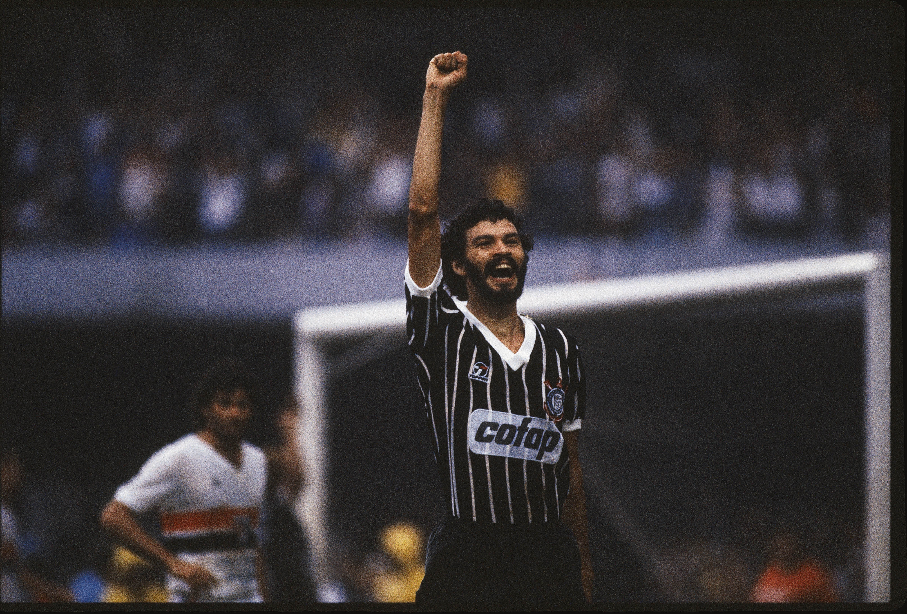

- Cássio (Gigante): Considerado por muitos o maior goleiro da história do clube. Fez defesas milagrosas e foi o herói das conquistas da Libertadores e do Mundial em 2012.
- Sócrates (O Doutor): Um dos maiores gênios do futebol mundial. Líder dentro de campo e figura central do movimento da Democracia Corinthiana na década de 1980.
-
Marcelinho Carioca (Pé de Anjo): Especialista em bolas paradas e um dos maiores ídolos da década de 1990 e 2000. Ele costumava dizer sobre bater faltas:
A bola é como uma mulher, você tem que tratar com carinho
. - Neto (Xodó da Fiel): Protagonista absoluto do primeiro título do Campeonato Brasileiro em 1990, eternizado por sua raça e perna esquerda letal.
- Rivellino (Reizinho do Parque): Criador do drible "elástico", desfilou sua categoria com a camisa 10 alvinegra e é um dos maiores meias da história do futebol.
Lendas Alvinegras |